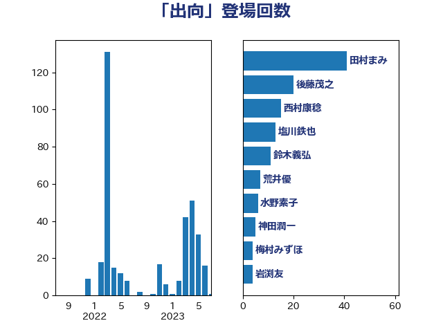

単語「出向」

| 田村まみ | 国民民主党 | 41 回 |
| 後藤茂之 | 自由民主党 | 20 回 |
| 西村康稔 | 自由民主党 | 15 回 |
| 塩川鉄也 | 日本共産党 | 13 回 |
| 鈴木義弘 | 国民民主党 | 11 回 |
| 荒井優 | 立憲民主党 | 7 回 |
| 水野素子 | 立憲民主党 | 6 回 |
| 神田潤一 | 自由民主党 | 5 回 |
| 梅村みずほ | 日本維新の会 | 4 回 |
| 岩渕友 | 日本共産党 | 4 回 |
| 城井崇 | 立憲民主党 | 4 回 |
| 吉田とも代 | 日本維新の会 | 4 回 |
| 高橋千鶴子 | 日本共産党 | 3 回 |
| 赤嶺政賢 | 日本共産党 | 3 回 |
| 萩生田光一 | 自由民主党 | 3 回 |
| 田中健 | 国民民主党 | 3 回 |
| 宗清皇一 | 自由民主党 | 3 回 |
| 和田政宗 | 自由民主党 | 3 回 |
| 階猛 | 立憲民主党 | 2 回 |
| 道下大樹 | 立憲民主党 | 2 回 |
| 進藤金日子 | 自由民主党 | 2 回 |
| 舞立昇治 | 自由民主党 | 2 回 |
| 羽生田俊 | 自由民主党 | 2 回 |
| 紙智子 | 日本共産党 | 2 回 |
| 福島伸享 | 無所属 | 2 回 |
| 磯崎仁彦 | 自由民主党 | 2 回 |
| 石井章 | 日本維新の会 | 2 回 |
| 猪瀬直樹 | 日本維新の会 | 2 回 |
| 浜田聡 | NHK党 | 2 回 |
| 河野太郎 | 自由民主党 | 2 回 |
| 永岡桂子 | 自由民主党 | 2 回 |
| 櫻井周 | 立憲民主党 | 2 回 |
| 柴田巧 | 日本維新の会 | 2 回 |
| 斎藤洋明 | 自由民主党 | 2 回 |
| 斉藤鉄夫 | 公明党 | 2 回 |
| 徳永エリ | 立憲民主党 | 2 回 |
| 小森卓郎 | 自由民主党 | 2 回 |
| 大西健介 | 立憲民主党 | 2 回 |
| 大島敦 | 立憲民主党 | 2 回 |
| 國重徹 | 公明党 | 2 回 |
| 和田有一朗 | 日本維新の会 | 2 回 |
| 古賀篤 | 自由民主党 | 2 回 |
| 加藤勝信 | 自由民主党 | 2 回 |
| 音喜多駿 | 日本維新の会 | 1 回 |
| 青山繁晴 | 自由民主党 | 1 回 |
| 青山大人 | 立憲民主党 | 1 回 |
| 阿部知子 | 立憲民主党 | 1 回 |
| 阿部司 | 日本維新の会 | 1 回 |
| 長浜博行 | 無所属 | 1 回 |
| 鈴木敦 | 国民民主党 | 1 回 |
| 鈴木庸介 | 立憲民主党 | 1 回 |
| 金村龍那 | 日本維新の会 | 1 回 |
| 金子恵美 | 立憲民主党 | 1 回 |
| 野間健 | 立憲民主党 | 1 回 |
| 野田聖子 | 自由民主党 | 1 回 |
| 辻清人 | 自由民主党 | 1 回 |
| 谷川とむ | 自由民主党 | 1 回 |
| 落合貴之 | 立憲民主党 | 1 回 |
| 若松謙維 | 公明党 | 1 回 |
| 芳賀道也 | 国民民主党 | 1 回 |
| 篠原孝 | 立憲民主党 | 1 回 |
| 福山哲郎 | 立憲民主党 | 1 回 |
| 石川香織 | 立憲民主党 | 1 回 |
| 石井苗子 | 日本維新の会 | 1 回 |
| 盛山正仁 | 自由民主党 | 1 回 |
| 田島麻衣子 | 立憲民主党 | 1 回 |
| 牧島かれん | 自由民主党 | 1 回 |
| 牧山ひろえ | 立憲民主党 | 1 回 |
| 浅川義治 | 日本維新の会 | 1 回 |
| 河野義博 | 公明党 | 1 回 |
| 河西宏一 | 公明党 | 1 回 |
| 沢田良 | 日本維新の会 | 1 回 |
| 森田俊和 | 立憲民主党 | 1 回 |
| 梅谷守 | 立憲民主党 | 1 回 |
| 柚木道義 | 立憲民主党 | 1 回 |
| 松本剛明 | 自由民主党 | 1 回 |
| 本田顕子 | 自由民主党 | 1 回 |
| 末松義規 | 立憲民主党 | 1 回 |
| 木原誠二 | 自由民主党 | 1 回 |
| 早稲田ゆき | 立憲民主党 | 1 回 |
| 新妻秀規 | 公明党 | 1 回 |
| 川田龍平 | 立憲民主党 | 1 回 |
| 岸田文雄 | 自由民主党 | 1 回 |
| 山田太郎 | 自由民主党 | 1 回 |
| 山本剛正 | 日本維新の会 | 1 回 |
| 山崎正恭 | 公明党 | 1 回 |
| 小野泰輔 | 日本維新の会 | 1 回 |
| 小西洋之 | 立憲民主党 | 1 回 |
| 小宮山泰子 | 立憲民主党 | 1 回 |
| 宮本徹 | 日本共産党 | 1 回 |
| 宮本岳志 | 日本共産党 | 1 回 |
| 太田房江 | 自由民主党 | 1 回 |
| 天畠大輔 | れいわ新選組 | 1 回 |
| 大串博志 | 立憲民主党 | 1 回 |
| 土田慎 | 自由民主党 | 1 回 |
| 国定勇人 | 自由民主党 | 1 回 |
| 嘉田由紀子 | 無所属 | 1 回 |
| 加田裕之 | 自由民主党 | 1 回 |
| 佐藤正久 | 自由民主党 | 1 回 |
| 今枝宗一郎 | 自由民主党 | 1 回 |
| 中川正春 | 立憲民主党 | 1 回 |
| 一谷勇一郎 | 日本維新の会 | 1 回 |
| たがや亮 | れいわ新選組 | 1 回 |
| おおつき紅葉 | 立憲民主党 | 1 回 |